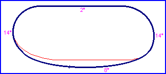

| Length | 0.759 Miles // 1.221 km |
| Direction | Anticlockwise |
Contact Information |
|
| Address |
P.O. Box 9257 602 E. Laburnum Avenue Richmond VA 23222 |
| Telephone | +1 (1)804 3457223 |
| Website | http://www.rir.com |
Richmond

| Length | 0.759 Miles // 1.221 km |
| Direction | Anticlockwise |
Contact Information |
|
| Address |
P.O. Box 9257 602 E. Laburnum Avenue Richmond VA 23222 |
| Telephone | +1 (1)804 3457223 |
| Website | http://www.rir.com |
Lasted Updated: 17 November 2002 23:05:02 GMT Standard Time